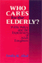
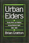

|  |
Who
Cares for the Elderly?
Public Policy and the Experiences of Adult Daughters
Abel, Emily K. 248 pp • 6x9 • Spring
1991
paper 978-0-87722-950-6
cloth 978-0-87722-814-1
Excerpt available |

|
Music, Style, and Aging
Growing Old Disgracefully?
Bennett, Andy
226 pp • 5.5x8.25 • Fall 2012
paper 978-1-4399-0808-2
cloth 978-1-4399-0807-5 |
|
Senior Power or Senior Peril
Aged Communities and American Society in the Twenty-First Century
Bramlett, Brittany H. 168
pp • 5.5x8.250 • Fall 2014
paper 978-1-43991-134-1
cloth 978-1-43991-133-4 |
 |
You
Are My Darling Zita
Busch, Glenn 304 pp • Fall 1991
cloth 978-0-87722-791-5
Excerpt available |
 |
Human
Attachment
Colin, Virginia L. 416 pp • 6.5x9.25
• Spring 1996
cloth 978-1-56639-459-8 |
 |
Journeys in Sociology
From First Encounters to Fulfilling Retirements
edited by Darling, Rosalyn Benjamin and Peter J. Stein
Published in collaboration with the American Sociological Association Opportunities in Retirement Network
264 pp • 6x9 • Spring 2017
paper 978-1-4399-1475-5
cloth 978-1-4399-1474-8
|
|
Aging
and the Law
An Interdisciplinary Reader
edited by Frolik, Lawrence A. 690 pp •
7x10 • Fall 1998
paper 978-1-56639-653-0
cloth 978-1-56639-652-3
Excerpt available |
|  |
Urban
Elders
Family, Work, and Welfare Among Boston's Aged, 1890-1950
Gratton, Brian 256 pp • Fall 1985
cloth 978-0-87722-390-0 |
 |
Family
Ties
Enduring Relations between Parents and Their Grown Children
Logan, John R. and Glenna D. Spitze 304 pp
• 6x9 • Fall 1996
paper 978-1-56639-472-7
cloth 978-1-56639-471-0 |
 |
My
Mother's Hip
Lessons from the World of Eldercare
Margolies, Luisa,
foreword by Walter M. Bortz II, M.D.
360
pp • 6x9 • Fall 2003
paper 978-1-59213-238-6
cloth 978-1-59213-237-9
Excerpt available |
 |
States,
Labor Markets, and the Future of Old-Age Policy
edited by Myles, John and Jill Quadagno 340
pp • Spring 1991
cloth 978-0-87722-790-8 |
|
Borrowed
Time
Artificial Organs and the Politics of Extending Lives
Plough, Alonzo L. 195 pp • Spring 1986
cloth 978-0-87722-415-0 |
 |
The
Caring Relationship
Elderly People and Their Families
Qureshi, Hazel and Alan Walker 287 pp •
Fall 1989
cloth 978-0-87722-663-5 |
 |
The
Changing of the Guard
Lesbian and Gay Elders, Identity, and Social Change
Rosenfeld, Dana 264 pp • 5.5x8.25 •
Spring 2003
paper 978-1-59213-031-3
cloth 978-1-59213-030-6
Excerpt available |
 |
Beyond
the Barricades
The Sixties Generation Grows Up
Whalen, Jack and Richard Flacks 324 pp •
Spring 1989
paper 978-0-87722-707-6
cloth 978-0-87722-606-2 |